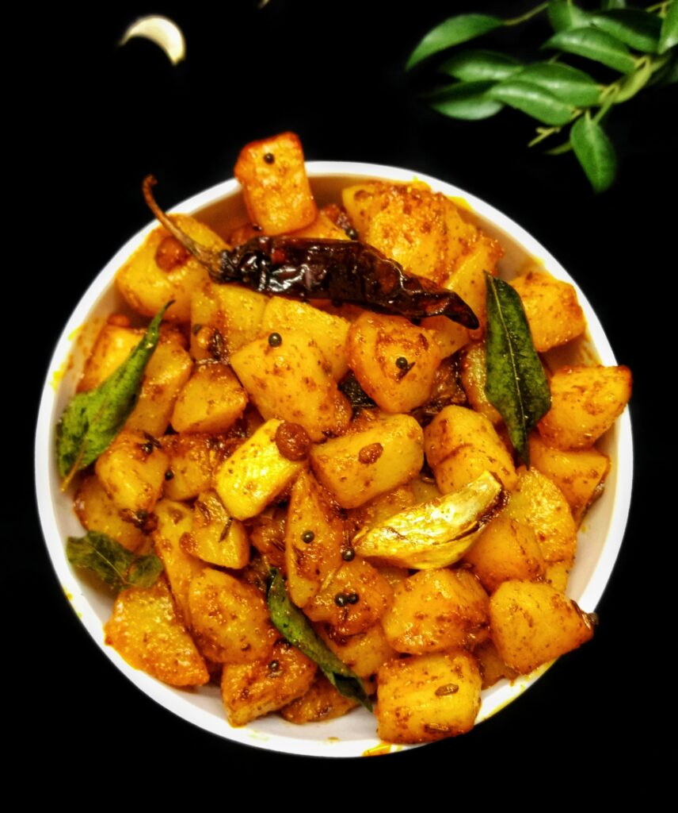

Potato Fry

Potato Fry is a spicy, tasty side dish made by cooking potatoes with spices, onion & curry leaves.
INGREDIENTS
- 1 heaped cup potato chopped
- Required amount of salt
- 1 tbsp oil(gingelly oil)
- 1/2 tsp mustard seeds
- 1/2 tsp jeera
- few curry leaves
- 1 no garlic crushed
- a tiny pinch hing
- 1/8 tsp of Turmeric powder
- 3/4 tsp of chilli powder
- 1/2 tsp of sambarpowder
Procedure
- Cut potato into small bite sized cubes, comes to 1 heaped cup. Rinse well, drain water and set aside.
- Heat oil in a kadai - add mustard seeds let it splutter then add jeera, add crushed garlic. Give a quick saute.
- Add potato and saute for 2 mins. Then add turmeric powder, red chilli powder, salt and sambar powder
- Saute for 1 minute. Then cook covered for 3-5 mins.
- Check if its cooked, turns soft then its perfectly cooked. Keep stirring in low medium flame. Saute for few more minutes till it has crispy edges.
- Serve Potato Fry hot with rice and curd perfect combo!
Delicious Potatofry is Ready!!!!!